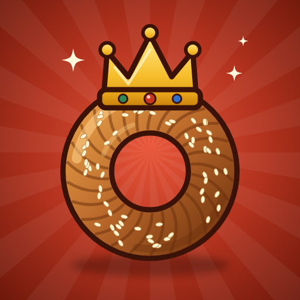

Simit Tycoon
Yozgat'ta bir simit tezgâhıyla başla, İstanbul'da holding kur.
Destek
Bir sorun mu yaşadın, bir önerin mi var? Bize yaz, en geç 3 iş günü içinde yanıtlarız. Oyunda Ayarlar > Geri bildirim gönder, cihaz bilgilerini de ekleyerek e-postanı hazırlar.
Sık sorulan sorular
İlerlemem kaybolur mu?
İlerlemen cihazında kayıtlıdır. Google Play Games ya da Game Center bağlıysa birkaç dakikada bir bulut kaydı da alınır; telefon değiştirince aynı hesapla girdiğinde kaldığın yerden devam edersin.
Satın aldığım ürün gelmedi ya da yeni telefonda yok.
Oyunda Mağaza sekmesinin altındaki "Satın alımları geri yükle" düğmesine dokun. Reklamsız paket ve VIP abonelik aynı mağaza hesabıyla geri gelir. Sorun sürerse makbuzunla birlikte bize yaz.
VIP aboneliğimi nasıl iptal ederim?
iPhone'da Ayarlar > adın > Abonelikler; Android'de Google Play > Profil > Ödemeler ve abonelikler. İptal, dönem sonunda geçerli olur.
Yöneticilerim neden durdu?
Yöneticiler 3 saatlik mesaiyle çalışır. Mesai bitince Mahalle ekranındaki "Mesaiye çağır" düğmesiyle onları ücretsiz yeniden başlatırsın. Elmasla mesaiyi 24 saate kadar uzatabilirsin.
Oyun neden internet istiyor?
Reklamlar, satın alımlar ve bulut kaydı için internet bağlantısı gerekir.
Verilerimi nasıl silerim?
Oyunda Ayarlar > Hesabımı ve verilerimi sil. Oyunu zaten sildiysen "Veri silme talebi" konulu bir e-posta gönder; 30 gün içinde sileriz.